半步
五子棋打谱.
把棋谱装进口袋，
随时研究、练习、对弈。
一个人持续设计与迭代的手机端五子棋学习软件。
从多格式读谱开始，逐步加入分析、训练与整套主题外观。
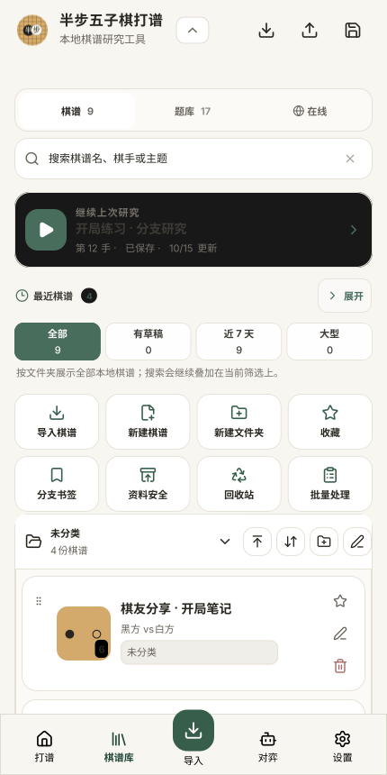
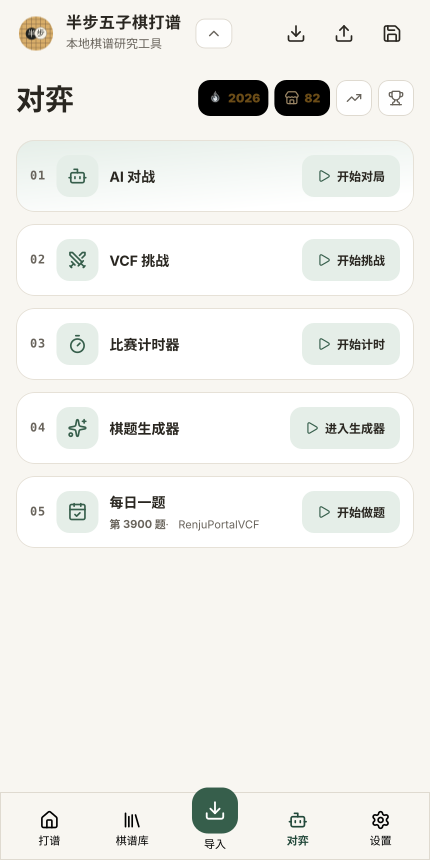
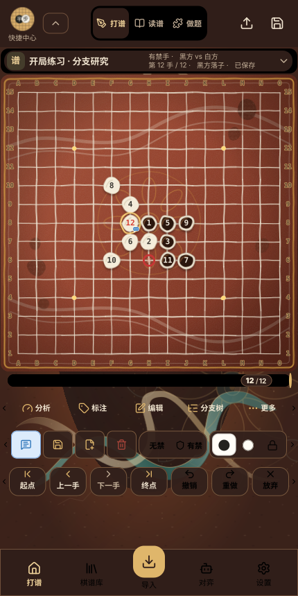
肖振全栈设计
UI / UX
从外观，到界面，再到实现
四个章节，介绍产品长什么样、如何使用，以及我怎样把想法做成可用的软件。
各处的棋谱资料，都能用半步快捷打开
群文件里的资料、手机里保存的棋谱、看到的棋题图片，从文件、分享、图片或坐标入口导入，再继续研究与练习。
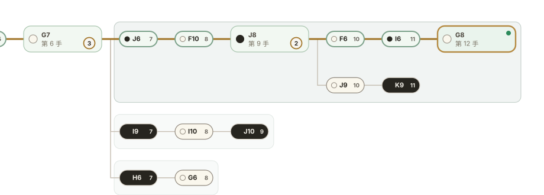
H8 I9 H10 …半步 · 把资料变成可研究的棋局
围绕棋友的五件事，安排产品功能
从自己的打谱过程和棋友反馈出发，把资料、研究、判断、练习与外观需求逐项落到界面。
让已有资料，
随时接着用。
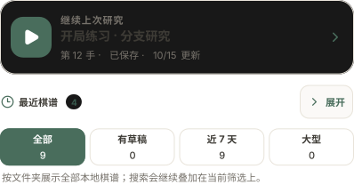
把保存过的棋谱、正在看的变化和下一次练习连起来，减少重复找资料的步骤。
打开资料，研究变化，继续练习
导入、分支、分析和出题，把棋友的资料变成可以反复使用的学习内容。
先把资料打开
文件、坐标、图片
三种导入入口。
沿着变化研究
主线与旁支
放在同一张图中。
读懂每一步
胜率、深度与候选点
一起判断局面。
把研究变成练习
选择题型与参数
生成新的训练内容。
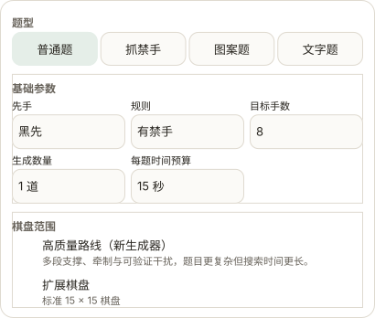
一副棋局，
多种气质。
让背景、棋盘、棋子与按钮说同一种视觉语言。
成套有完整风格，拆开也能自由搭配。
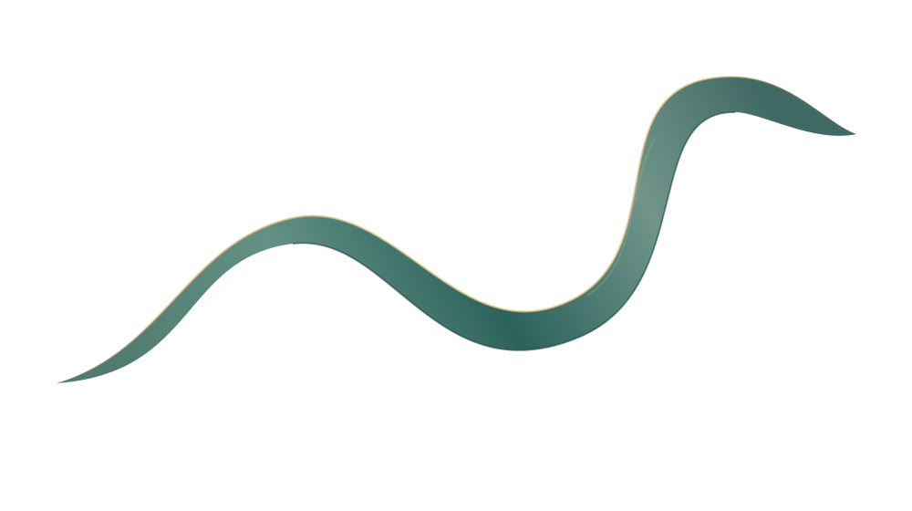
背景、棋盘、棋子，分别设计
三个独立的视觉层，既可以组成套装，也可以按喜好重新搭配。
棋子层
负责黑白识别、材质、手数与当前手提示。
棋盘层
负责盘面纹理、网格、坐标和边框。
主题层
负责环境氛围、界面底色、按钮和文字色。
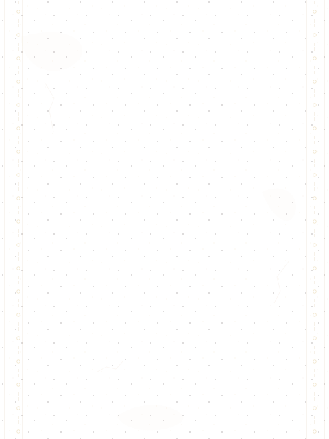
每套主题，都有自己的颜色秩序
从文字、容器到选中态，一起跟随主题变化。浅色、暗色与装饰主题共用同一套界面结构。
尊贵黑金
以黑色压住环境，用金色集中强调操作与棋局。金属光泽沿用到棋子、网格和按钮边缘。
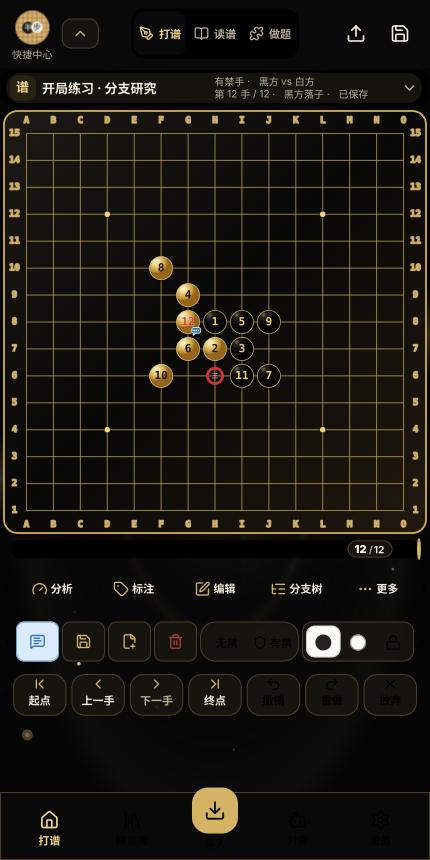
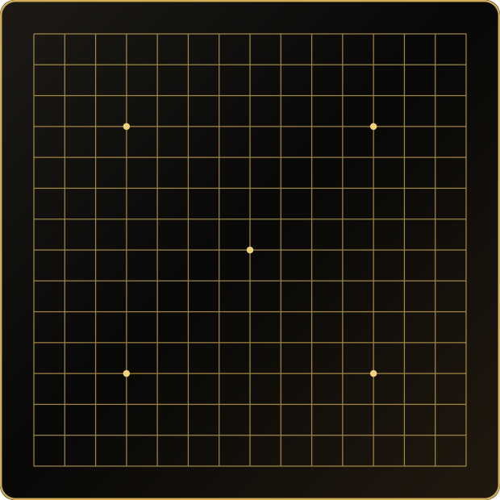
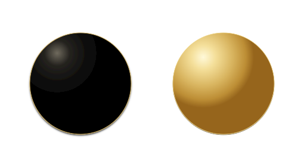
飞天敦煌
从壁画里的矿物色、团花和飘带出发，形成暖赭底、石绿装饰与泥金细节的完整套装。
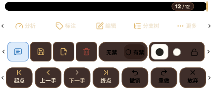
棋魂 · 墨与雾
用黑白层次构成朦胧的墨雾环境。中灰盘面托住棋局，魂火轮廓成为这套外观的识别点。
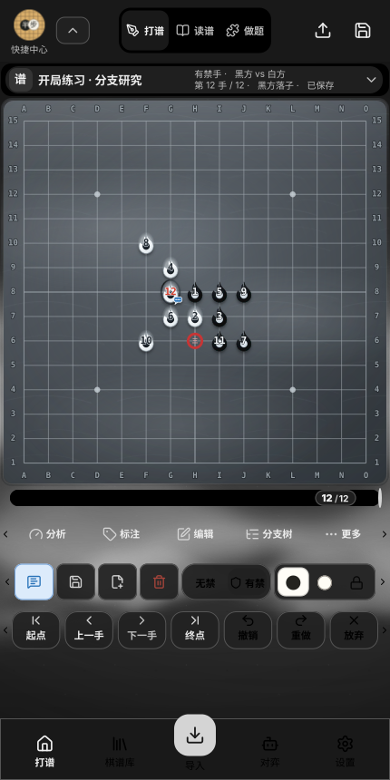
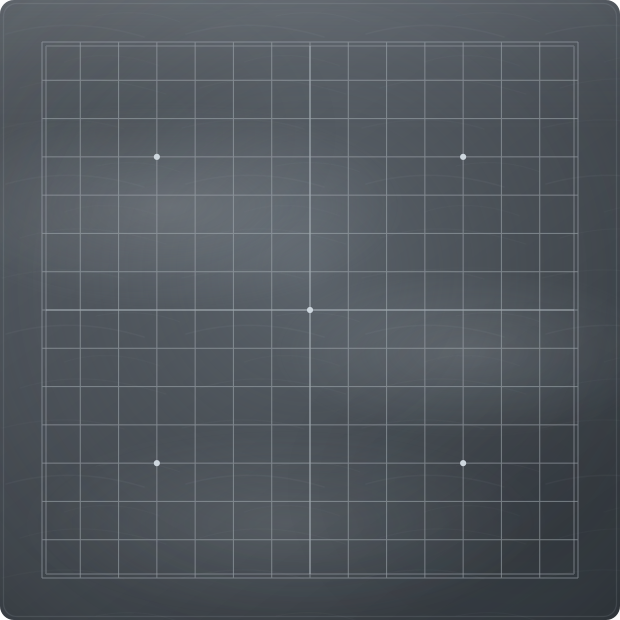
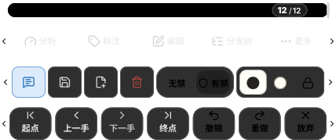
棋魂的取舍，落在轮廓与可读性上
保留魂火的辨识度，同时让黑白、手数和落点保持清楚。下方是依据修改记录重绘的设计对照。
大块亮斑太显眼
分散为多缕细雾，拉长透明度过渡，让环境更柔和。
数字要跟着视觉中心走
焰形轮廓的重心偏下。数字下移到焰心，内火缩小，留出黑白边缘。
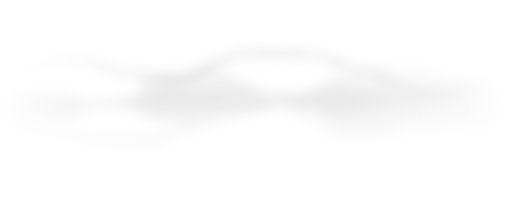
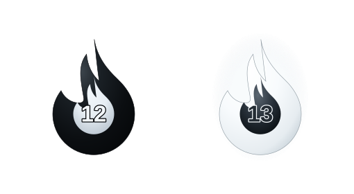
保留外轮廓，调整内部比例
黑子与白子使用相反的明暗关系；光晕集中在当前手，盘面保留冷灰层次。
成套之外，也可以自由组合
同一套材质拆成棋盘与棋子两部分。选择时可以看局部细节，也可以回到真实棋局确认搭配。
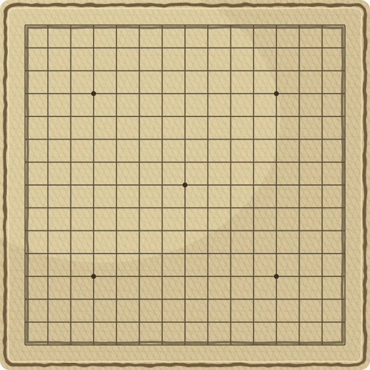
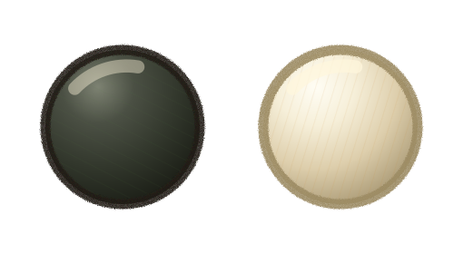
彩铅森林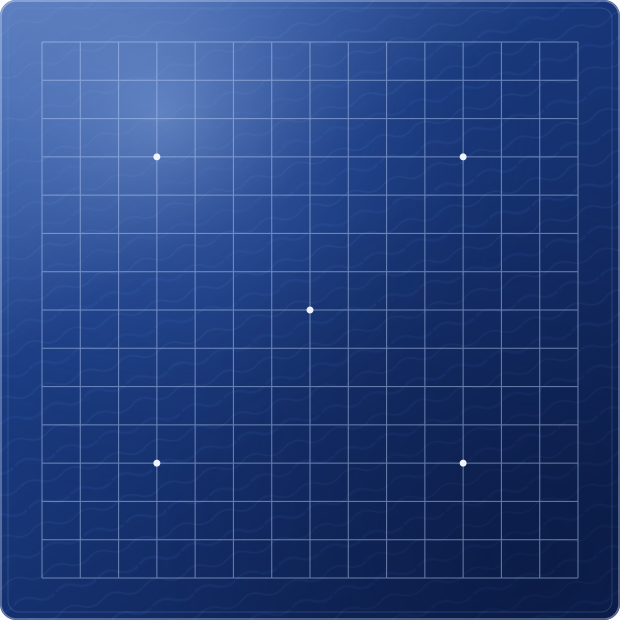
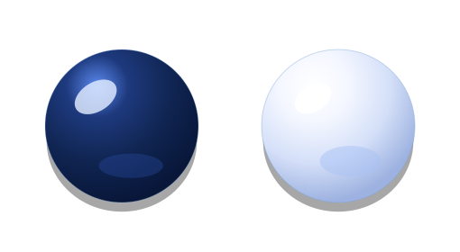
蓝调珐琅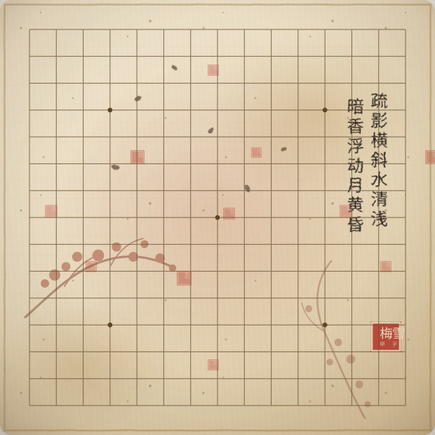
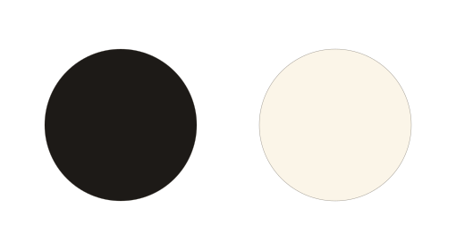
梅花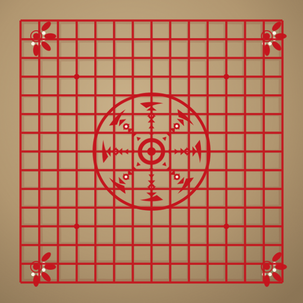
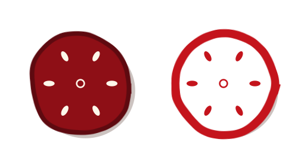
剪纸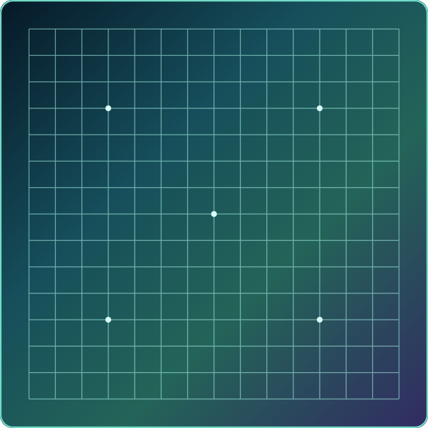
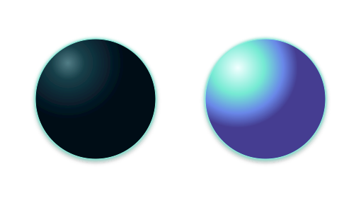
极光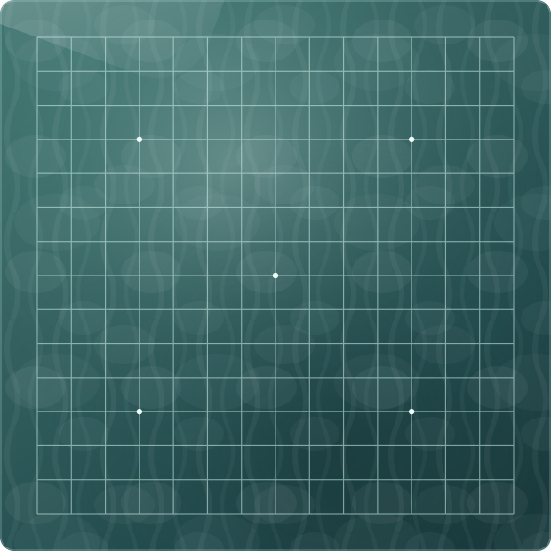
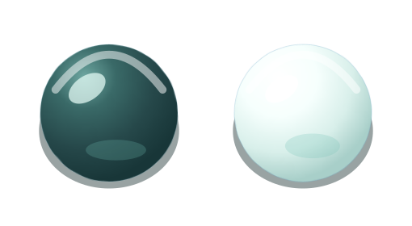
水波棋盘尽量大，
操作就近放。
手机空间有限，打谱却需要很多工具。
我把全局入口、棋局状态、研究工具与走棋操作分层安排。
打谱界面，按操作频率分层
从顶部入口到拇指附近的走棋工具，每一区域承担不同任务。
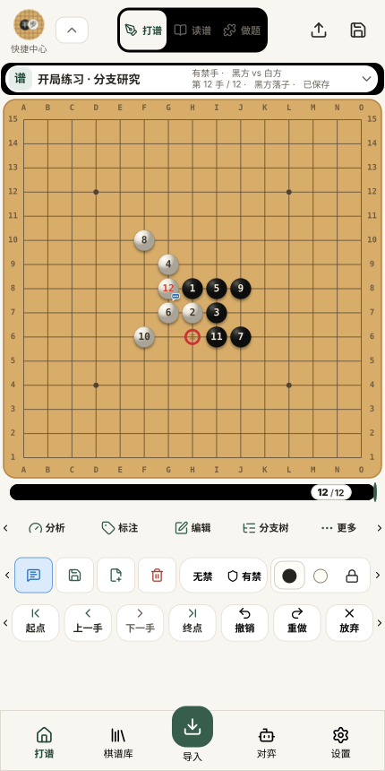
快捷中心与三档折叠
设置快捷入口紧邻折叠按钮，随时调整工作区。
棋局状态
标题、规则、双方、当前手数和保存状态集中呈现。
棋盘
优先获得横向空间，网格、坐标与棋子显示可调整。
手数条
拖动定位某一手；当前进度与总手数同时可见。
模式切换、导出与保存
打谱、读谱、做题共用工作台；导出与保存常驻顶端。
首行功能区
分析、标注、编辑、分支树与更多工具，按任务打开面板。
常驻工具与走棋导航
注释、保存、新建、规则、执子；下排逐手前后与撤销重做。
底部五个主入口
打谱、棋谱库、导入、对弈、设置。导入居中，方便接收资料。
工具很多，先把相近的操作放在一起
首行选择研究任务，中间处理棋谱，底行控制步进。横向溢出可以滑动，布局也支持调整。
首行 · 研究工具
分析看局势；标注记判断；编辑改棋局；分支树看变化；更多收纳低频工具。
中间 · 棋谱操作
注释、保存、新建、删除，以及有禁 / 无禁、黑白执子和锁定。
底行 · 走棋导航
起点、上一手、下一手、终点；撤销、重做和放弃编辑。
三档折叠，把空间逐步还给棋局
同一个按钮连续点击，依次收起顶栏、状态栏和底部导航；再点一次，恢复完整界面。

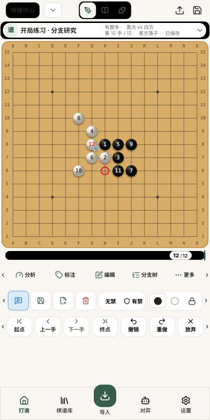
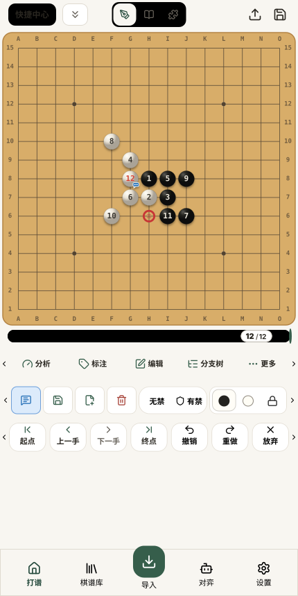
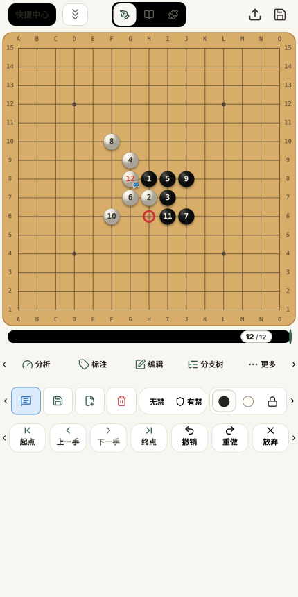
先继续上次研究，再找新的棋谱
棋谱库同时承担“找回进度”和“整理资料”两件事。最近研究靠前，分类、筛选和文件操作接在后面。
棋谱 / 题库 / 在线
资料类型先分开，搜索入口紧跟其后。
继续上次研究
保留上一次的棋谱与进度，少走一次查找流程。
快捷操作集中
导入、新建、文件夹、收藏、分支书签和资料安全。
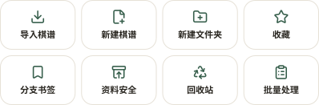
对局时专心下棋，分析时看清依据
对弈页先选玩法；正式对局突出双方与用时。研究棋局时，再展开引擎胜率、深度和候选点。
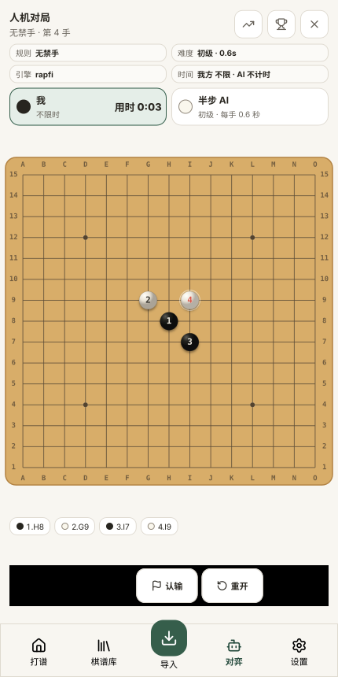
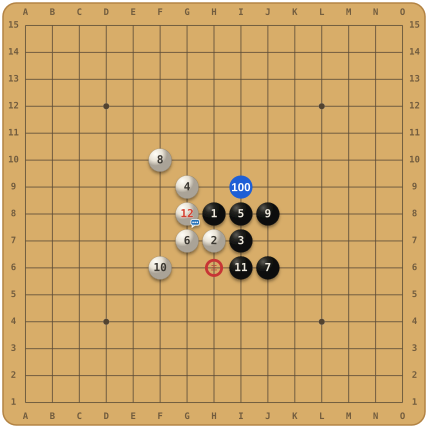
分析工作区
图中 I9 的候选点与右侧黑方胜率来自同一次实际计算。数值随局面和引擎计算变化。
先找到设置，再看着效果调整
设置首页按用途折叠分组。进入外观后，用一块共用预览调棋盘、棋子与特效，减少来回确认。
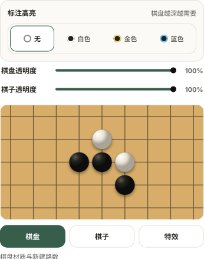
按用途分组
外观、棋盘显示、分析、引擎、数据与设备布局，各自展开。
透明度紧挨预览
棋盘与棋子分别调整，拖动后直接查看组合效果。
一块预览，三个页签
棋盘 / 棋子 / 特效共用预览区域，下方选项随页签切换。
转过手机，研究区跟着重排
竖屏让棋盘接近屏幕宽度；横屏把棋盘和工具分成两栏。保持完整控件，不用等比缩小整套界面。
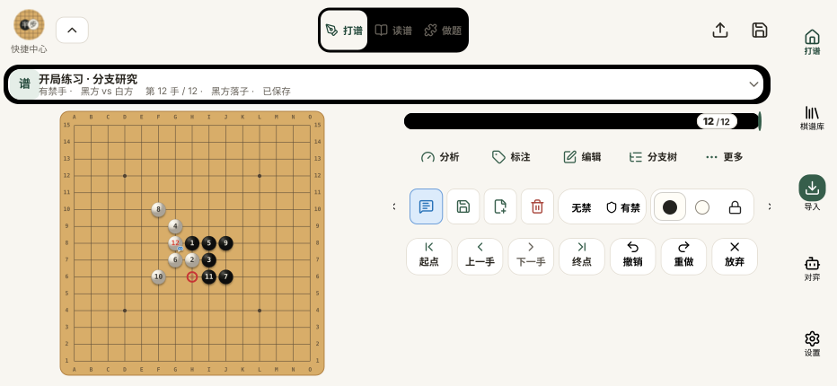
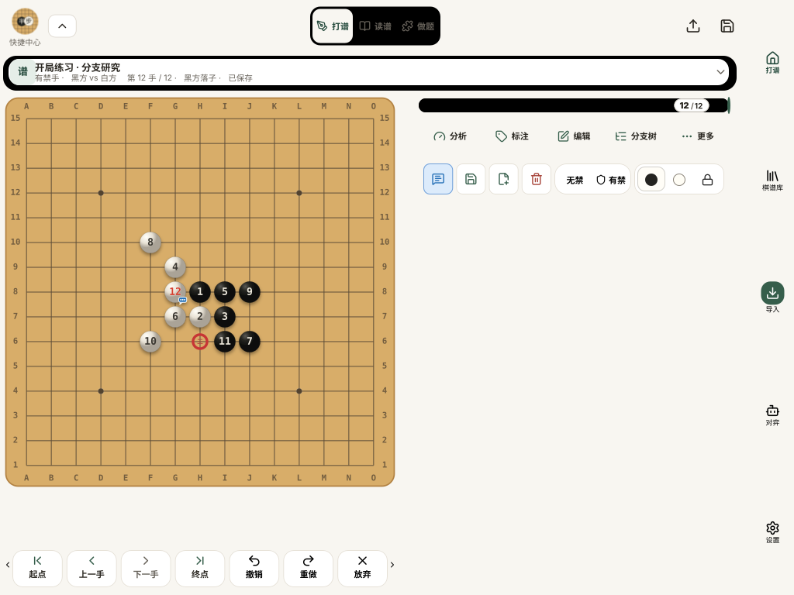
横屏 · 棋盘与工具并列
落子空间留在左侧，状态、功能区和走棋操作在右侧继续使用。
更宽屏幕 · 保持操作密度
工具仍围绕棋局组织，完整保留导航与常用操作。
一份棋谱，
可以接着学下去。
文件导入、图像识别、引擎分析与训练共享棋局数据。
每增加一种能力，都让已有资料多一种用途。
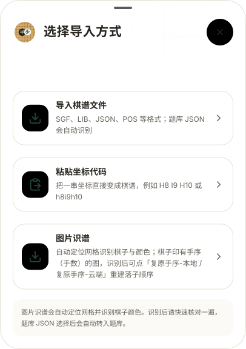
先统一棋局，再处理不同来源的细节
棋谱文件保留分支与注释；图片先识别网格和黑白棋子，再核对局面与手序。
棋谱文件
兼容多种五子棋资料格式，
把棋谱接入同一工作台。
图片识谱与复原
识别网格 → 识别黑白 → 核对局面。
有手数的图片可继续复原落子顺序。
接到研究工具
分支、注释与节点关系保留在棋谱中，
后续还可以保存、分析和分享。
分析给出判断，训练让判断变成经验
引擎负责计算，界面负责把结果摆在棋局旁；训练功能把同一个研究场景延伸为可反复练习的内容。
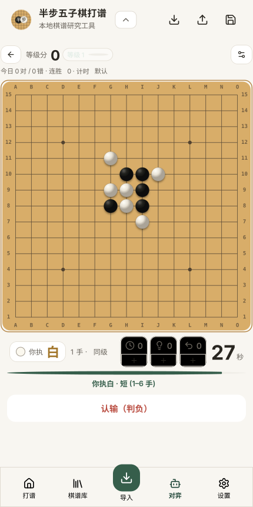
棋题生成器
题型、先手、规则与时间预算集中选择；生成后再保存到题库。
可切换的引擎服务
接入本地 Rapfi 与 KataGo，让分析、复盘和对弈共用计算能力。
从能打开棋谱，
做到能持续使用。
我负责提出方向、拆分任务、判断设计和测试结果。
AI 参与出稿与实现，真实使用中的问题决定下一轮改进。
在棋友群里发布，也在群里持续改进
我在几个 1500+ 人的五子棋群分享软件，并维护自己的 QQ 群，收集需求、问题描述与使用反馈。
自建 QQ 交流群
持续接收反馈、说明更新，
让使用问题有地方被追踪。
能不能像智子一样，
加上引擎分析？
手机上棋盘还能大一点吗？
落子不太好点。
按钮太多，
注释的空间不够了。
收到反馈后，改动落在具体位置
每条意见都回到操作场景：棋盘大小影响落子，折叠影响研究空间，引擎读数影响判断。
棋盘能不能更大一点？
增加棋盘侧边、棋子、坐标等显示调节，尽量用满手机宽度。
工具太多，注释放不下。
增加三档折叠，并适配横屏双栏；需要工具时再展开。
希望看到引擎的实时判断。
接入引擎分析，让读数与棋盘候选点一起更新。
我定方向，把不同任务交给合适的 AI
从单模型实现，到按任务分工。复杂问题、常规功能、网页与宣传内容采用不同工具，再由我统一检查结果。
肖振
想法与创意 · 需求拆解 · 设计判断
测试验收 · 用户沟通 · 发布取舍
GPT
复杂逻辑与难查的 Bug先定位原因，再审查修复影响
Qoder / GLM / DeepSeek
训练与常规功能扩展拆成小任务，逐项确认实现
WorkBuddy
网页、宣传视频与包装整理表达，再检查视觉与文案
Zcode 等工具
辅助实现与任务衔接交接上下文，减少重复摸索
功能变多以后，先把改动范围管住
代码、资源和任务需要有清楚的边界。让每次修改能定位、能检查、能回退，才有条件持续扩展。
功能逐步拆分
把相近职责收进模块，减少所有修改都挤在主文件里的情况。
Git / GitHub 留下版本
检查改了哪些文件，保留可追踪和可回退的节点。
依赖图辅助定位
结合 Graphify 图谱与交接文档，理解模块关系再动手。
旧设备、旧棋谱，带来了新的问题
兼容、数据关系与状态同步的问题，往往出现在其他棋友的使用环境里。我需要拿到具体场景后，再复现和修正。
旧设备启动不了引擎
检查 Android 与引擎能力差异，增加兼容与降级路径。
导入后缺节点、分支关系异常
回到原始棋谱对照节点与变化，修正导入和分支处理。
主题只有颜色，效果没显示
排查旧 WebView 和减少动态效果设置，补足兼容显示。
人机总是走开局库，练不了指定局面
补上自定义开局，摆好局面后再开始对战。
在电脑上检查，再拿到手机上操作
我会在浏览器和自己的 Android 真机上验证核心流程。确认没有明显问题后发布，再跟进棋友遇到的设备与使用问题。
电脑 / 浏览器
Android 真机
发布后的反馈
从提出想法，走到对结果负责
工艺美术训练让我关注颜色、形态与气质；做软件让我学会把这些判断放进操作流程、数据和设备限制里。